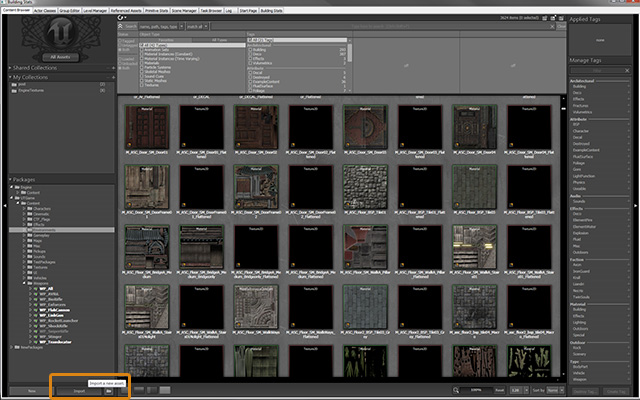
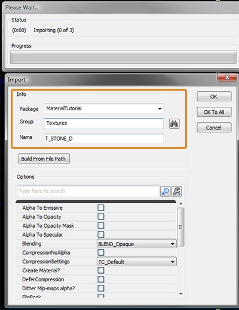
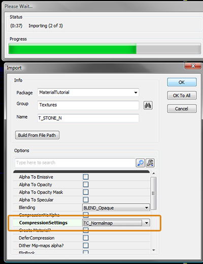
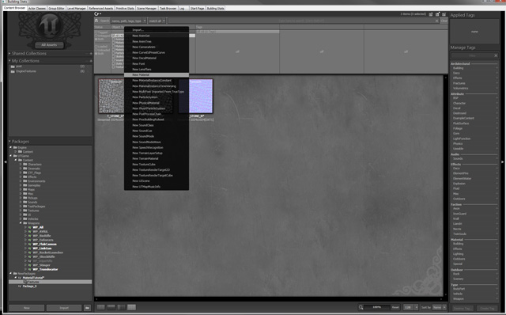
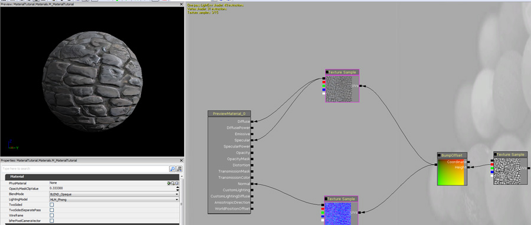
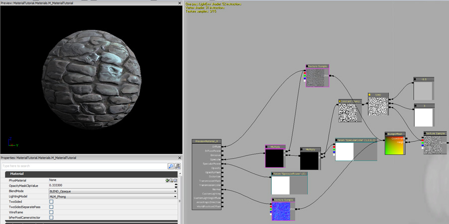

UDN
Search public documentation:
MaterialsTutorialCH
English Translation
日本語訳
한국어
Interested in the Unreal Engine?
Visit the Unreal Technology site.
Looking for jobs and company info?
Check out the Epic games site.
Questions about support via UDN?
Contact the UDN Staff
日本語訳
한국어
Interested in the Unreal Engine?
Visit the Unreal Technology site.
Looking for jobs and company info?
Check out the Epic games site.
Questions about support via UDN?
Contact the UDN Staff
材质教程
概述
把内容导入到引擎中
导入贴图
在我们创建材质之前我们将需要导入我们的贴图。您可以在内容浏览器的左下方点击导入，然后导航到您的贴图，同时导入它们。
只要您选择要导入的文件，就会出现导入对话框。您必须为这个资源提供一个包名称（新命名或现有名称）和一个 Group（组）名称。
要了解诸如法线贴图之类的贴图类型，您将需要更改压缩设置。例如，可以将一个法线贴图设置为 TC_Normalmap，代替用于漫反射、高光和蒙板贴图的 TC_Default。
CompressionSettings(压缩设置)- TC_Default
- 这个选项应该用于像漫反射或高光蒙板的普通贴图。
- TC_NormalMap
- 如果您正在导入一个法线贴图，那么这个选项是您需要的。它将使用和 Default 选项一样的压缩方式，但是它也能正确地自动设置 pank/unpack 的范围。
- TC_DisplacementMap
- 如果你打算使用一个用于作为地形置换贴图的贴图，那么您可以选择这个选项。注意：引擎将使用 Alpha 通道作为源（不是 RGB 通道）将贴图降低为 8-位的灰度图像。

创建一个新的材质
只要在内容浏览器中有您的贴图，您就可以创建您的材质。在内容浏览器的中心右击空白处，然后选择 New Material（新建材质）。
材质编辑器
在材质编辑器中，您可以按住 "T" 然后在空白处点击，使用当前在内容浏览器中选择的贴图放置一个 Texture Sample 节点。您应该添加 Diffuse Texture 和 Normal Texture，然后将它们连接到 Diffuse 和 Normal 输入端。这样将会为您提供一个具有可以对光源做出反应的凹凸细节的基础表面。 您还可以添加一个基础蒙板/高度贴图纹理来获取一个凹凸偏移/平行效果。右击并选择 Utility（实用性）, 然后 BumpOffset 会将您的蒙板贴图的红色通道连接到凹凸偏移的高度输入，这样就可以将它的输出连接到 Diffuse 和 Normalmap 贴图坐标输入。
您还可以添加一个基础蒙板/高度贴图纹理来获取一个凹凸偏移/平行效果。右击并选择 Utility（实用性）, 然后 BumpOffset 会将您的蒙板贴图的红色通道连接到凹凸偏移的高度输入，这样就可以将它的输出连接到 Diffuse 和 Normalmap 贴图坐标输入。
 要在材质上得到一个基础的镜面反射，您可以将漫反射贴图连接到 Specular Input（高光输入）。
要在材质上得到一个基础的镜面反射，您可以将漫反射贴图连接到 Specular Input（高光输入）。

要实现更复杂的镜面反射效果，您可以通过按住 "1" 键并点击空白区域创建一个标量常量。将它赋值为 5，然后将其连接到 Specular Power（高光强度）输入。您还可以通过右击并选择 Parameter（参数）、Vector Parameter（向量参数），为这个节点起个 SpecularColor（高光颜色）名称并输入一个颜色来转换高光颜色。按住 M 并点击两次创建 2 个乘法节点。将蒙板的输出连接到第一个乘法节点的 B 输入端，然后将 SpecularColor 参数连接到这个乘法节点的 A 输入端。将这个输出结果连接到第二个乘法节点的 B 输入，并将漫反射贴图的 Output（输出）连接到 A 输入端。将第二个乘法的输出结果连接到 Specular（高光）输入端。 向蒙板贴图添加对比度的好方法是通过在空白处右击并选择 Math->LinearInterpolate 创建一个线性插值节点。将蒙板贴图的红色通道连接到 Lerp 节点的 Alpha 输入端。通过按住 "1" 键双击创建 2 个标量常量。将其中一个值设置为 1 以上的值，另一个设置为 0 或略低于 0。通过右击并选择 Utility（实用性）创建一个常量限定节点 ConstantClamp。将线性插值节点的输出连接到常量限定的输入。使用这个输入替换在乘法节点使用这个蒙板的输入。
向蒙板贴图添加对比度的好方法是通过在空白处右击并选择 Math->LinearInterpolate 创建一个线性插值节点。将蒙板贴图的红色通道连接到 Lerp 节点的 Alpha 输入端。通过按住 "1" 键双击创建 2 个标量常量。将其中一个值设置为 1 以上的值，另一个设置为 0 或略低于 0。通过右击并选择 Utility（实用性）创建一个常量限定节点 ConstantClamp。将线性插值节点的输出连接到常量限定的输入。使用这个输入替换在乘法节点使用这个蒙板的输入。

您可以重新利用材质中的蒙板，例如您可以使用它创建一个自发光。通过按住 "O" 键并点击创建一个 One 减节点，这样可以创建一个向量参数和一个乘法。像下面的图片一样连接这些节点，将乘法的输出链接到材质的自发光输入。 下面是同一个蒙板作为不透明物体使用的示例。
下面是同一个蒙板作为不透明物体使用的示例。